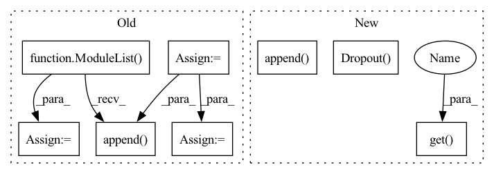

Pattern ID :20245

Before Change
super().__init__()
layers = ModuleList()
paras = []
// use ModuleList to create layers with different size
inc = in_channels
for hid, act in zip(hids, acts):
layer = MedianConvolution(inc,
hid,
activation=act,
bias=bias)
layers.append(layer)
paras.append(dict(params=layer.parameters(), weight_decay=weight_decay))
inc = hid
layer = MedianConvolution(inc, out_channels, bias=bias)
layers.append(layer)
// do not use weight_decay in the final layer
paras.append(dict(params=layer.parameters(), weight_decay=0.))
self.compile(loss=torch.nn.CrossEntropyLoss(),
optimizer=optim.Adam(paras, lr=lr),
metrics=[Accuracy()])
self.dropout = Dropout(dropout)
self.layers = layers
def forward(self, x, nbrs):
After Change
conv = []
conv.append(nn.Dropout(dropout))
for hid, act in zip(hids, acts):
conv.append(MedianConvolution(in_channels,
hid,
bias=bias))
conv.append(activations.get(act))
conv.append(nn.Dropout(dropout))
in_channels = hid
conv.append(MedianConvolution(in_channels, out_channels, bias=bias))
conv = Sequential(*conv)
In pattern: SUPERPATTERN
Frequency: 3
Non-data size: 8
Instances
Fragment ID: 65938468
Project Name: edisonleeeee/graphgallery
Commit Name: 4a0b252917d5068be1fc68f2752b58b6119c3a21
Time: 2021-02-09
Author: cnljt@outlook.com
File Name: graphgallery/nn/models/pytorch/median.py
M Class Name: MedianGCN
N Class Name: MedianGCN
M Method Name: __init__(9)
N Method Name: __init__(9)
M Parent Class: TorchKeras
N Parent Class: TorchKeras
M File Name: graphgallery/nn/models/pytorch/median.py
N File Name: graphgallery/nn/models/pytorch/median.py
M Start Line: 25
M End Line: 47
N Start Line: 21
N End Line: 33
'>
Before Change
super().__init__()
layers = ModuleList()
paras = []
inc = in_channels
pre_head = 1
for hid, num_head, act in zip(hids, num_heads, acts):
layer = GATConv(inc * pre_head,
hid,
activation=get_activation(act),
num_heads=num_head,
feat_drop=dropout,
attn_drop=dropout)
layers.append(layer)
paras.append(
dict(params=layer.parameters(), weight_decay=weight_decay))
inc = hid
pre_head = num_head
layer = GATConv(inc * pre_head,
out_channels,
num_heads=1,
feat_drop=dropout,
attn_drop=dropout)
layers.append(layer)
// do not use weight_decay in the final layer
paras.append(dict(params=layer.parameters(), weight_decay=0.))
self.layers = layers
self.dropout = Dropout(dropout)
self.compile(loss=torch.nn.CrossEntropyLoss(),
optimizer=optim.Adam(paras, lr=lr),
After Change
super().__init__()
head = 1
conv = []
for hid, num_head, act in zip(hids, num_heads, acts):
conv.append(GATConv(in_channels * head,
hid,
num_heads=num_head,
feat_drop=dropout,
attn_drop=dropout))
conv.append(activations.get(act))
conv.append(nn.Flatten(start_dim=1))
conv.append(nn.Dropout(dropout))
in_channels = hid
head = num_head
'>
Fragment ID: 65938469
Project Name: edisonleeeee/graphgallery
Commit Name: 4a0b252917d5068be1fc68f2752b58b6119c3a21
Time: 2021-02-09
Author: cnljt@outlook.com
File Name: graphgallery/nn/models/dgl_torch/gat.py
M Class Name: GAT
N Class Name: GAT
M Method Name: __init__(9)
N Method Name: __init__(9)
M Parent Class: TorchKeras
N Parent Class: TorchKeras
M File Name: graphgallery/nn/models/dgl_torch/gat.py
N File Name: graphgallery/nn/models/dgl_torch/gat.py
M Start Line: 25
M End Line: 53
N Start Line: 23
N End Line: 44
'>
Before Change
super().__init__()
layers = ModuleList()
paras = []
// use ModuleList to create layers with different size
inc = in_channels
for hid, act in zip(hids, acts):
layer = TrimmedConvolution(inc,
hid,
activation=act,
bias=bias,
tperc=tperc)
layers.append(layer)
paras.append(dict(params=layer.parameters(), weight_decay=weight_decay))
inc = hid
layer = TrimmedConvolution(inc, out_channels, bias=bias, tperc=tperc)
layers.append(layer)
// do not use weight_decay in the final layer
paras.append(dict(params=layer.parameters(), weight_decay=0.))
self.compile(loss=torch.nn.CrossEntropyLoss(),
optimizer=optim.Adam(paras, lr=lr),
metrics=[Accuracy()])
self.dropout = Dropout(dropout)
self.layers = layers
def forward(self, x, nbrs):
After Change
super().__init__()
conv = []
conv.append(nn.Dropout(dropout))
for hid, act in zip(hids, acts):
conv.append(TrimmedConvolution(in_channels,
hid,
bias=bias,
tperc=tperc))
conv.append(activations.get(act))
conv.append(nn.Dropout(dropout))
in_channels = hid
conv.append(TrimmedConvolution(in_channels, out_channels,
bias=bias,
'>
Fragment ID: 65938467
Project Name: edisonleeeee/graphgallery
Commit Name: 4a0b252917d5068be1fc68f2752b58b6119c3a21
Time: 2021-02-09
Author: cnljt@outlook.com
File Name: graphgallery/nn/models/pytorch/trimmed_gcn.py
M Class Name: TrimmedGCN
N Class Name: TrimmedGCN
M Method Name: __init__(10)
N Method Name: __init__(10)
M Parent Class: TorchKeras
N Parent Class: TorchKeras
M File Name: graphgallery/nn/models/pytorch/trimmed_gcn.py
N File Name: graphgallery/nn/models/pytorch/trimmed_gcn.py
M Start Line: 26
M End Line: 49
N Start Line: 22
N End Line: 37